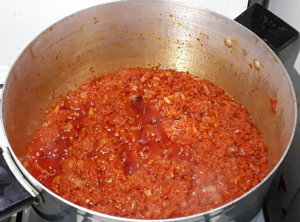

Tomato Stew
I have a chapati recipe and I said chapati goes well with stew. Thus, I will be teaching
how to make stew

Description
A stew is a liquid formed by mixing and grinding multiple ingridients into a texture that resembles a paste
Tomato stew is quick and easy to make when you are in a rush and has the following ingredents
If you experience any texture issues this dish might not be for you.
Ingredients
- 3 large tomatoes
- 2 red onions
- 2 tablespoons of ginger
- 2-3 scotch bonnet peppers(depending on your spice tolerence)
- 2 Red Bell Peppers
- tomato paste
- 4 table spoons Olive oil
- 2 table spoons Palm oil
- 4 cloves of garlic
- black pepper
- Cayenne pepper
- salt
- maggi cube
- garlic powder
Steps
- Cut the garlic into small pieces
- Cut the onion nto small pieces
- Cut the red bell and scotch bonnet peppers
- Section out the ginger
- Blend 3 tomotoes, one onion, ginger, scotch bonnet, bell peppers and the garlic until smooth
- After blending set aside the mixture and heat up a non stick pan on stove
- Add olive oil
- Wait for olive oil to heat up
- After olive oil is heated add palm oil
- After palm oil is heated add onions
- Wait for onions to turn a golden color
- Add garlic powder, maggi cube, a pinch of salt, cayenne pepper, black pepper on onion
- After the onions have absorbed the spices add a tablespoon of tomato paste
- Add the tomato mixture from earlier
- Use a wooden spoon to mix until the stew starts to bubble
- After bubbling take off the heat
Takeaways
Serve with chapati
, rice, bread or by itself. The stew is great especially if someone is sick.